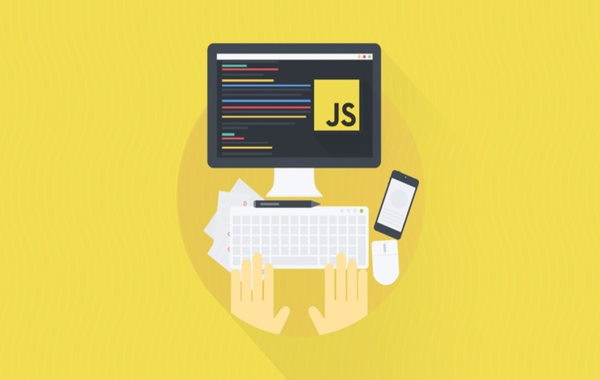

<!DOCTYPE html>
<html lang="fa">
<head>
    <meta charset="utf-8" />
    <link rel="stylesheet" href="./css/index-page-style.css" />
    <title>سایت</title>
    </body></html> 
</head>
<body dir="rtl">
    <header>
        <center><h1 id="title-page">طراحی وبسایت به زبان ساده</h1></center>
        <nav id="main-menu">
        	<center>
    			<span><a id="menu-item" href="#history">JavaScript چیست    </a></span>
    			<span>|</span>
    			<span><a id="menu-item" href="#ads">مزایا</a></span>
    			<span>|</span>
    			<span><a id="menu-item" href="#library">کتابخانه ها</a></span>
			<span>|</span>
    			<span><a id="menu-item" href="#rst">RST چیست؟</a></span>
			<span>|</span>
    			<span><a id="menu-item" href="register.html">ثبت نام در سایت</a></span>
    		</center>
    	</nav>
    </header>
    <main id="main-section">
        <section>
        	<article>
        		<center></center><br /><br /><br />
        		<h2 id="titles">تاریخچه</h2>
        		<p id="history">
        		زبان جاوا اسکریپت یکی از مشهورترین زبانهای برنامهنویسی است که براساس کدهای HTML تعریف شده است. زبان جاوا اسکریپت سطح بالا، داینامیک، شیگرا  است. با استفاده از این زبان می توانید سطح وب سایت خود را به وسیلهی امکانات اضافی تعاملی ارتقاء دهید. این زبان به تنهایی و یا همراه با سایر زبانهای برنامه نویسی استفاده می شود. JavaScript به شما کمک می کند تا صفحات وب آراسته و تعاملی ایجاد کنید. در حقیقت شما با استفاده از جاوا اسکریپت می توانید صفحات استاتیک وبسایت خود را به صفحاتی زیبا و تعاملی تبدیل نمایید. یکی از انواع فریمورک های این زبان ری اکت می 	باشد
        		از دیگر موارد امکان پذیر با استفاده از جاوا اسکریپت برای بهتر کردن رابطکاربری و تجربه کاربری یک صفحه وب می توان به موارد زیر اشاره کرد:
        		</p>
        		<ul>
        			<li>نمایش دادن اطلاعات یا مخفی کردن آن ها با کلیک کردن روی یک دکمه</li>
        			<li>اسکرول کردن در گالری تصاویر</li>
        			<li>پخش صوت و تصویر</li>
        		</ul>
        		<h2 id="ads">مزایا و معایب</h2> 
        		<table border="1px" id="table-ads">
  					<tr>
    					<th>مزایا</th>
    					<th>معایب</th>
  					</tr>
  					<tr>
    					<td>بارگذاری سریع تر وب سایت ها</td>
    					<td>پشتیبانی از وراثت منفرد</td>
  					</tr>
  					<tr>
  						<td>ساده بودن ساختار</td>
    					<td>عدم برخورداری از امنیت کافی</td>
  					</tr>
				</table>
				<h2 id="library">کتابخانه های Javascript</h2>
				<ul>
					<li><a href="react.html">React</a></li>
					<li><a href="vue.html">Vue.js</a></li>
				</ul>
        	</article>
            <p id="resource-link" onclick="this.innerHTML='<a href=https://digiato.com/article/2022/04/09/what-is-javascript>برو به سایت</a>';">برای دیدن لینک این مقاله کلیک کنید.</p>
        </section>
	<section>
        	<article>
        		<h2>rst چیست و چه کاربردی دارد؟</h2>
        		<p id="rst">
        		زبان جاوا اسکریپت یکی از مشهورترین زبانهای برنامه نویسی است که براساس کدهای HTML تعریف شده است. زبان جاوا اسکریپت سطح بالا، داینامیک، شیگرا  است. با استفاده از این زبان می توانید سطح وب سایت خود را به وسیلهی امکانات اضافی تعاملی ارتقاء دهید. این زبان به تنهایی و یا همراه با سایر زبانهای برنامه نویسی استفاده می شود. JavaScript به شما کمک می کند تا صفحات وب آراسته و تعاملی ایجاد کنید. در حقیقت شما با استفاده از جاوا اسکریپت می توانید صفحات استاتیک وبسایت خود را به صفحاتی زیبا و تعاملی تبدیل نمایید. یکی از انواع فریمورک های این زبان ری اکت می 	باشد
        		از دیگر موارد امکان پذیر با استفاده از جاوا اسکریپت برای بهتر کردن رابطکاربری و تجربه کاربری یک صفحه وب می توان به موارد زیر اشاره کرد:
        		</p>
        		<a href="rst.rst">یک نمونه صفحه rst ساده</a>
			<a href="rst.html">تبدیل شده فایل rst به html</a>
        	</article>
        </section>
    </main>
    <footer id="footer">
        <center><pre>© همه حقوق محقوط است</pre></center>
    </footer>
    <script>
        console.log(document.domain);
        var titleElement = document.getElementById('title-page');
        // titleElement.textContent = 'سایت آموزشی';
        var resourceLink = document.querySelector('#resource-link');
        resourceLink.style.fontSize = '20px';
    </script>
</body>
</html>
